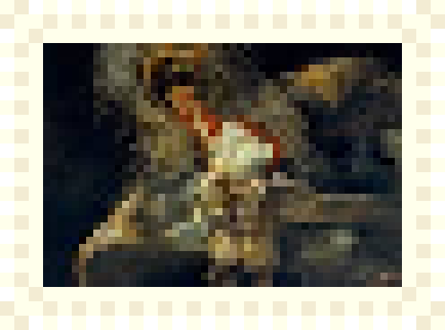

Goals and Intentions
Goals and intentions for the site with more text to see overflow
Again!
Button on an image to play music perhaps, with forward button and loops, cassette-like. replace button tho

Veridian
Hues
main content
main content
main content
main content